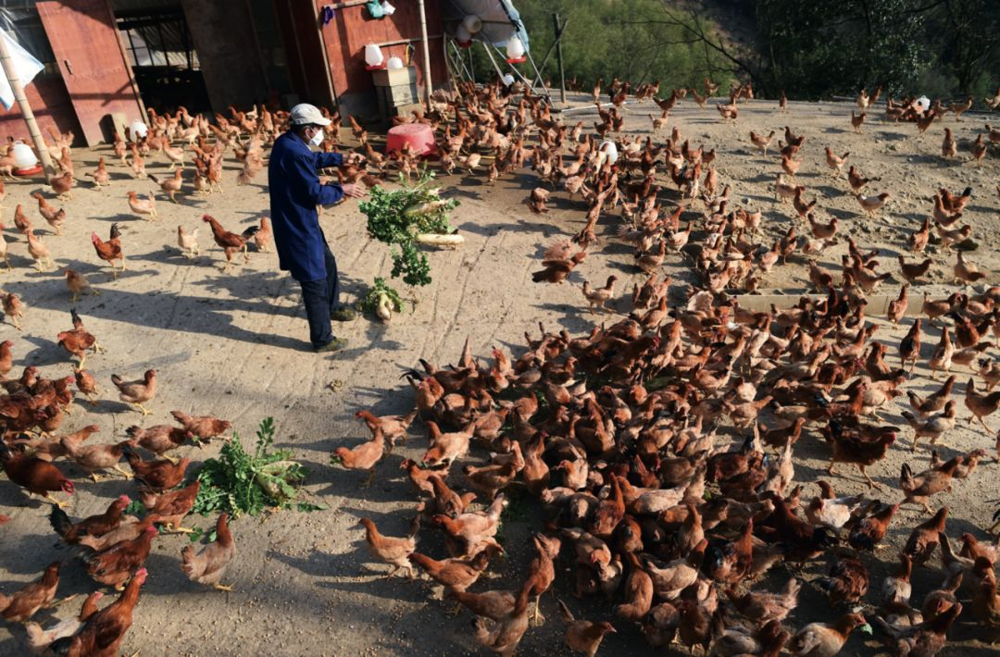
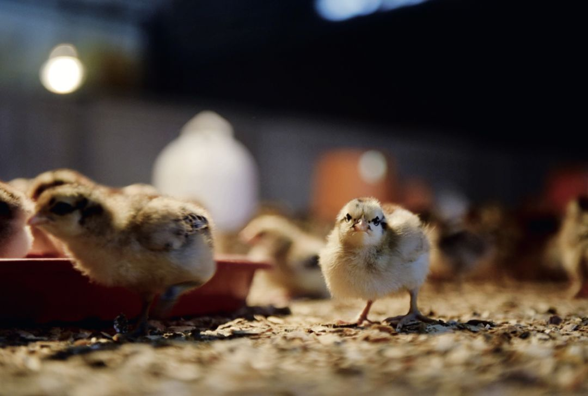

复工遭遇五花八门的证明，上班族吐槽为开证明跑断腿
原文链接 备份链接 防疫压力层层传导，但各区域、 部门之间缺乏互通互认的信息共享机制超长春节假期终于结束，上班族等来了复工通知。 数据显示，2月14日至2月22日，全国累计发送旅客1.17亿人次，每日客流量均实现环比增长。但在返程速度逐渐 …

以往发生禽流感，只要路不断
损失只局限在活禽养殖和销售等个别环节
但这一次，与以前的危机截然不同

2月22日，诸暨暨南街道新胜村的杨棚图在农场里喂鸡。2月中旬，浙江省诸暨市农业农村局针对因新冠肺炎疫情造成的农产品销售难问题开展上门服务，对接多家线上平台，并通过当地政府部门的微信公众号等“吆喝”售卖，帮助当地养殖户、种植户渡过难关。新胜村经营农场养鸡的杨棚图因此获益，农场里因疫情影响积压的五千多只鸡、十万多个鸡蛋均已卖出。图/新华
疫情“黑天鹅”袭击养鸡业
本刊记者/苏杰德
*发于2020.3.23总第940期《中国新闻周刊》*
在过去的50多天里，12万只鸡被挖坑掩埋，21万只以每斤不到两元的价格贱卖——成本是每斤4~5元。这是湖北省当阳市正阳家禽养殖专业合作社成立10年来的至暗时刻。经此一疫，损失超过300万元，元气大伤。
“现在说什么都没有意义了。”合作社负责人谢华情绪低落，在24分钟的通话时间里，这句话他重复了八次。他的合作社有50多位养殖户，分布于宜昌下辖的各县级市，在当地也算小有名气。
春节至今，全国养鸡产业经历了历史上最艰难的时期。“我问过很多从业三十多年的人，他们都说从没经历过这种情况。从南方到北方，肉鸡养了要挖坑埋掉，鸡苗孵化后也要挖坑埋掉。”北京峪口禽业南方区经理张明瑞告诉《中国新闻周刊》。他所在的公司创建于上世纪70年代，目前是世界三大蛋鸡育种公司之一，仅2月的损失就超过7000万元。
“据我们测算，自疫情暴发至3月1日，黄羽肉鸡、白羽肉鸡、白羽肉鸭和蛋鸡等家禽产业主要品种共计损失金额149.76亿元以上。”中国畜牧业协会禽业分会秘书长宫桂芬告诉《中国新闻周刊》，在过去50天里，家禽行业每天损失将近3亿元。
填埋鸡苗到麻木
1月23日，装载着大约4万只鸡苗的货车，突然停在了河南省的高速公路上。按原计划，这批鸡苗将从张明瑞的公司发往谢华的合作社。然而，这天上午10点，武汉宣布正式封城，一切都被打乱了。
经过三个小时的沟通无果后，货车只能返程。张明瑞说，鸡苗孵化出来之后，一般要在24小时之内运给养殖户。但客户解释，当地可能不允许接收这批鸡苗，只能收回。这批鸡苗每只售价约1.7元，收回之后只能以每只5分钱的价格出售。张明瑞很郁闷，“油费都赚不回来”。
无论是谢华还是张明瑞，都没有预料到，武汉封城之后，各地会直接进入封村、封路模式，依赖交通运输的养鸡产业链被直接切断。
疫情暴发时，谢华的合作社有存栏鸡33万只，已经长到两斤多的鸡直接填埋了12万只。“养殖户看到没有希望卖掉，就把它们掩埋了”，由于当时已经封路，作为合作社带头人的谢华不能去养殖户所在地，只能在家里干着急。
剩下的21万只鸡也不好过。“这段时间，养殖户把鸡棚灯关了，三天才喂食一顿，仅仅是为了让鸡能够保命。”谢华说，例如，平时两万只鸡一天喂食两顿，每次要消耗1.4吨饲料，而疫情期间，为了节约饲料成本，变为每三天吃一次，一次吃1.4吨饲料。
由于饲料短缺，也有不少养殖场对蛋鸡采取了强制换羽的方法。一般情况下，蛋鸡在入冬前会换一次羽毛，而强制换羽就是人工介入，强行改变它们的换羽规律，一方面节省饲料，另一方面不再产蛋，避免鸡蛋卖不出去的窘境。
冀农药业集团技术总监王献忠是蛋鸡行业资深从业者，他告诉《中国新闻周刊》，换羽之后，蛋鸡会饿半个月左右不进食，再加几天少量进食的过渡期，整个流程接近20天。他估计，2019年全国大概有蛋鸡13亿只，至少有10％~20％进行了强制换羽。
相比肉鸡和蛋鸡，鸡苗企业的处境更艰难。“养殖户一般从大年三十到年初二不进货，这三天的鸡苗会积压到初三一起往外运。”武汉莱德生态农业有限公司总经理段俊告诉《中国新闻周刊》，1月27日，大年初三，原本是段俊的公司年后第一批鸡苗出场的日子，但4万只鸡苗准备装车的时候遇到了问题，检疫证开不了，货车也上不了高速，鸡苗运不出去了。
段俊的养鸡场位于武汉市江夏区山坡街道群星村，从武汉市区驱车要花费大约一个半小时。段俊有70多个孵化箱，每个孵化箱可以孵化2万只鸡苗。从1月28日开始，段俊先是将鸡苗无害化处理，也就是掩埋。后来，甚至把正在孵化的鸡蛋也倒掉、掩埋，一直持续了二十多天。段俊说，最开始还很心痛，“后来就麻木了”。
公司没有营收，支出却不能停。段俊的养鸡场目前有40多个工人，每月工资支出超过20万元。由于部分工人春节回家后，难以返工，段俊只能在村附近高价雇佣临时工：“最高的时候，一个人每天工钱要1000元，现在一天也要300元。”

去年，鸡苗市场火爆，很多客户都抢着预订年底和年后的鸡苗。段俊公司的订单一直排到了2020年的4月份。“往年，春节前的鸡苗一只能卖4~5元，春节后鸡苗价格会涨到6~7元。”段俊说，今年的收入直接归零了，“这次损失超过500万元。”
但是段俊不敢停止所有的孵化来止损，他还抱着一线希望：“公司跟客户签订了合同，哪一天路通了，就得马上运送鸡苗给客户，所以不能停止孵化。”晨科农牧参股了段俊的鸡苗公司，这一次也连带受损。董事长戴小方告诉《中国新闻周刊》：“国家出台的政策是可以运输的，我们以为政策能执行到位，就没有停止孵化鸡苗。”
肉鸡和鸡苗被掩埋的情景，在全国养鸡场大范围上演。“正月十五之前的十几天，整个南北方鸡苗厂家，把鸡苗全部都销毁了。没办法，你去哪路都不通。”张明瑞说。
春节后十余天是家禽行业损失最严重的时期。“我们测算，受疫情影响，2月2日之前，家禽产业主要品种损失50.48亿元；2月3日到9日，损失金额31.10亿元。” 中国畜牧业协会禽业分会秘书长宫桂芬告诉《中国新闻周刊》，截至3月1日，共计损失金额149.76亿元。
被切断的精密链条
对于养鸡行业来说，交通是生命线。
“家禽业生产周期短，效率高，产业链连接紧密，相互之间的依存度比较强。一个环节出问题，整个产业链都要受影响。”咨询机构北京博亚和讯的副总经理马闯对《中国新闻周刊》解释，现在的问题是全链条受损，前端断料、中端产品没法加工、后端产品也运不到卖场。
以往发生禽流感，只要路不断，损失只局限在活禽养殖和销售等个别环节。但这一次，与以前的危机截然不同。
正月初一，谢华不愿坐以待毙，开车去当地政府部门寻求解决方法，但处处碰壁。他记得，当时要从当阳市运饲料到宜昌的另一县级市枝江。枝江的养殖户办了运输证，并把证明发到他手机里。谢华将其提供给当阳市相关政府负责人，但该负责人却告诉他：“人命关天，现在只管人不管鸡。”
跨地运输需要双方政府部门的同意。谢华说，当阳市政府部门后来还是准许他运输了一次，但这些饲料对于养殖户来说是杯水车薪。
由于宜昌后来也封城，谢华只能待在家里，通过电话求助。他打过当阳的市长热线，市长热线让他找当地畜牧局。畜牧局无法解决，他又打给农业农村部，农业农村部找了省里，省里找到市里，最后还是安排当地畜牧局解决。一圈下来，谢华的诉求还是解决不了。谢华与当地政府部门经常打交道，也算熟识，他认为：“畜牧局也不是不想起作用，但不是它一个部门说了算。”
农产品的运输难题，很早就引起了国家部委的关注。1月30日，农业农村部办公厅、交通运输部办公厅、公安部办公厅等三部委发布紧急通知，严禁未经批准擅自设卡拦截、断路阻断交通等违法行为，维护“菜篮子”产品和农业生产资料正常流通秩序。
不过，上述措施并没有让养鸡产业运输难问题根本扭转。中国畜牧业协会2月1日在致全体会员的公开信中说：“随着各地政府加大防控措施，关闭活禽交易市场、限制活禽运输流通。部分地区甚至出现执行偏差、行动过度，中断正常生产生活物资交通运输，造成活禽主要销售流通渠道受阻，饲料等生产物资运输阻断。”
在规模化养殖的今天，饲料、鸡蛋、鸡苗、肉鸡养殖、屠宰加工、销售等链条分散在全国，而且环环相扣，紧密程度超出一般人的想象。交通的畅通，是维持养鸡产业链条高效运转的必要条件。

“各地防疫管控强度不一样，管理政策也不一样，很难有统一的文件。”湖北省家禽业协会监事伍志敏告诉《中国新闻周刊》，协会也只能起到信息的收集、呼吁、汇报作用，“各级政府主管部门领导重视了，才能解决问题。”
湖北是我国禽蛋大省，禽蛋产量居全国第六，2019年家禽存栏近3.5亿只，出栏约5.3亿只。日需饲料3000吨，其中玉米1800吨，豆粕1200吨。
“突如其来的疫情防控及交通管制，使我省家禽养殖命悬一线:饲料及原材料（玉米、豆粕）调运基本瘫痪，按往年常规贮备的饲料及玉米、豆粕现已告急，大部分规模养殖场将立马‘断粮’。”湖北省家禽业协会1月28日向中国畜牧业协会发出求助函。
晨科农牧董事长戴小方告诉《中国新闻周刊》，湖北七成左右的玉米是从东北三省水运过来，全程大约需要20天，豆粕则由长江下游的加工厂发出，“水运比火车和公路要强很多，一条船能运3000~5000吨，这能装满一个火车专列。”
湖北省家禽业协会呼吁了半个月时间，交通不畅的问题才有所改观。不过，运输不畅依然还是问题的瓶颈。戴小方说，长江沿线的码头开工不顺利。有的开，有的关；有的开几天，因为疫情又关了，“到现在为止，码头最多开了50％”。
饲料短缺问题也得到了相关部委的回应，并协调中储粮有针对性进行放粮。原料荒逐步缓解了，但很多饲料厂又面临复工难题。
晨科农牧2月1日就得到了第一批原料，开始恢复生产，但复工还是一路坎坷。晨科农牧旗下有四家饲料厂，三家在黄冈，一家在黄石。2月中下旬，两家正在运行的饲料厂被关闭了，3月初才允许开工。戴小方说：“这取决于当地政府对疫情的理解，疫情严重的时候，就让你停工；疫情压力没有那么大的时候，就让你复工。”其中，一家饲料厂复工问题更复杂，市里和区里都同意复工，但最后卡在了街道办。
戴小方说，停工接近一个半月，客户基本跑掉了，“在最困难的时候，对养殖户来说，谁能救他就跟谁走。”
活禽市场的老难题
对于长江以南的养鸡户来说，全国各地关闭活禽市场，是更精准的打击。
2月1日，河南率先在全国关闭活禽市场，随后各地纷纷跟进。“我们当时调查，全国27个省市都关闭了活禽市场。”宫桂芬说，对部分种类的肉鸡来说，活禽是一个重要交易场所，关闭了之后，把销售出口给堵死了。
黄羽肉鸡受到的影响首当其冲。黄羽肉鸡龙头公司温氏股份公告介绍，我国肉鸡主要包括白羽肉鸡、黄羽肉鸡和肉杂鸡，在鸡肉产量中的占比大致为 60％、35％和5％。
“黄羽鸡是中国人主要的禽类消费品种，各地品种比较多样，其活禽销售模式是延续数千年的传统，符合国人的烹饪和饮食方式。在很多地区，活鸡更是作为中秋、春节等节日的传统节礼，是中国传统文化的一部分。”江苏立华牧业股份有限公司董事会秘书虞坚告诉《中国新闻周刊》。
立华股份是黄羽肉鸡龙头上市公司之一。虞坚表示，经过这些年的提升，活禽零售市场，尤其是城市中的零售市场，在防疫安全、环境卫生、综合管理等方面已经有了长足进步，“如果一关了之，对行业势必造成相当大的影响”。
在马闯看来，相比北方的白羽肉鸡，黄羽肉鸡这次受的影响更大。黄羽肉鸡羽毛带色，比如广东的三黄鸡，讲究“三黄一红”，羽毛、鸡皮和脚必须是黄色，鸡冠是红色。“很多消费者会认为这种鸡非常好吃，它的味道、口感、肌肉纤维的细度等各方面都很完美，这是非常传统的评价鸡味道好坏的方式。”马闯告诉《中国新闻周刊》，但问题的症结也在这，鸡必须要保持活的状态，而且消费者还要亲眼看到，所以黄羽肉鸡大部分采用活鸡销售方式。

3月6日，在贵州省黔东南苗族侗族自治州从江县斗里镇台里村的一家养鸡农民专业合作社，村民正在管理鸡苗。图/中新
而白羽肉鸡相对来说，产业链比较完整，屠宰加工以后，可以冰冻起来，或者冰鲜保存。马闯坦言，“黄羽肉鸡产业链在屠宰加工环节相对薄弱，在疫情冲击下，遭到的损失也更加严重”。
为了解养鸡行业受到多大影响，张明瑞3月10日从山东自驾，一路南下，经过安徽、浙江，3月15日到达江西。一路走来，他明显感受到了活禽市场关闭对养殖户的影响。
“在安徽淮北，正常是50天出栏的鸡，现在养了60天到65天。活禽市场不开放，养鸡鸭成本高了，利润低了。而且，淮北屠宰场太少，大量的毛鸡杀不了。”张明瑞原本估计，能卖出去的鸡最低成交价为每斤1元5角，但实地走访下来发现，最低时只能卖到每斤5角，每卖一斤要亏近四元，“很多养鸡户亏了之后，在4月份之前都不愿意上鸡了。”
“这些养殖户没别的要求，就是期望加速活禽市场开放。”张明瑞说，养殖户损失惨重，“有一部分人在退出，有一部分人在转型，也有一部分人在徘徊。”
作为上市公司，为了应对疫情，虞坚介绍，立华股份尝试转换到线上销售模式，一些子公司和下游客户将屠宰加工后的白条鸡上市，缓解存栏积压的压力，“随着疫情的缓解，目前有少部分地区恢复了活禽市场，行业期盼市场能早日开放。”
各地已经意识到关闭活禽市场带来的负面影响。3月6日，河南省农业农村厅等三部门联合印发的紧急通知提到，当前全省农贸市场已开放70％以上，而农贸市场中大多活禽交易没有开放，对家禽产业稳产保供影响较大。
活禽市场是困扰养殖产业多年的难题。2014年，H7N9流感暴发，由于该病毒初期名称是禽流感，让养鸡行业损失惨重，如今的遭遇似乎是昨日重现。“每次一有大疫情，家禽都跟着受影响。致病源头还没调查清楚，活禽交易市场就被封闭了。”宫桂芬对这样的一刀切做法无奈：“说关就关，养鸡人很受伤。”
作为资深从业者，马闯近些年一直在思考原因和对策。“活禽市场真是一个说了多年的问题，一些人认为这是几千年的传统，不应该去改变。”马闯说，这次疫情再次提醒，活禽市场改变的重要性，否则养鸡人过几年就要遭一次罪。
对于活禽上市的解决方向，马闯认为有三种渠道：首先，黄羽肉鸡屠宰后冰鲜上市是大趋势，不可逆转；其次，高档餐馆应建立封闭通道，直接跟养殖场对接；可学习国外的周末农场模式，在固定的时间，小规模销售活禽。
在他看来，对活禽的养殖和上市，更应该健全规范。“应该对养鸡场的生物安全措施进行评级，比如，最高五星的话，规定四星级以上就具备运输的资质，并且制定关于运输车怎么安排、屠宰加工企业怎么接收、产品到卖场怎么规范的规则。” 马闯坦言，这些环节如果事先有一个标准操作规范，这次养鸡行业可能不会遭受这么大的影响。
疫情过后才是生死时刻
“现在面临的问题是怎样拉动消费，把产品能够销出去，减少积压。”宫桂芬说，大的餐饮企业经营没有恢复正常，还是无法把鸡肉消费拉动起来。
“在消费场景上，家禽产品的家庭消费占比很低，主力还是餐馆和集团消费。” 马闯介绍，相对而言，目前只有家庭消费还有增长，但是这部分增长还不足以抵消集团消费和餐馆消费的损失。
在他看来，相比目前的消费不振和鸡卖不出去，更大的隐忧是，由于企业生产计划被迫后移，会造成鸡肉需求多的时候，供不应求引起价格上涨。
张明瑞也认为，未来一两个月如果需求放开，由于鸡肉供应量减少，价格肯定会上升，“2月份鸡苗数量减少，会导致鸡肉供应不足。此外，国外暴发疫情，可能会导致肉类进口减少。这些因素叠加，我预计4月份鸡肉价格会达到今年高峰。”
济南康普赛恩生物科技有限公司销售经理苏晓东给《中国新闻周刊》算了一笔账。目前没有准确的数据统计肉鸡缺口有多少，不过可以进行推算：去年末，全国“父母代种鸡（指经过育雏育成后，按照设计的品系间进行杂交、产蛋，用于孵化繁育商品鸡的种鸡）”存栏最高量约3700万只，按照正常产蛋率和孵化率，大约每天能出近1600万只鸡苗。以此计算，春节到正月十五这15天，将减少约2.4亿只鸡苗。以肉鸡成长周期42天计算，这些缺口带来的价格变动，将在3月中下旬后逐步显现。
苏晓东观察，从3月15日开始，鸡肉价格已经在上涨。他记得，3月初，每斤鸡肉为3.2元左右，3月12日最高到了每斤4.6元，价格增幅超过四成。
值得关注的是，猪肉价格上涨有可能与鸡肉上涨行情叠加。2019年，受非洲猪瘟的影响，我国猪肉产量出现明显下降。据国家统计局数据显示，2019年猪肉产量4255万吨，比上一年下降21.3％。猪肉产量下降，鸡肉弥补了部分不足，价格也是水涨船高。因此，去年几家大型养鸡上市公司赚的钱，相当于几年的利润之和。以立华股份为例，2019年公司实现营收88.83亿元，同比增长两成；实现净利润19.73亿元，同比增长五成。
在山东农业大学教授常维山看来，今年猪肉产量还没恢复，缺口还有千万吨，禽肉和蛋原本还要增产。不过，此次疫情让2020年养鸡行情存在很多不确定性，已经有专家将2020年养鸡行业增速从之前的15％调整到8％。
为了应对诸多不确定性，宫桂芬建议，政府部门可以把这一段时间积压的禽肉产品收储起来，减少养殖户的损失。目前，湖北对本省蛋鸡养殖场积存鲜鸡蛋进行收储，具体标准为每收储一吨鲜鸡蛋按250元给予收购运费、电费补贴，补贴时限自2月18日至3月20日。
但已经损失了大量真金白银的养殖散户，很多已经无力投入再生产。2月26日，中国人民银行召开电视电话会议，部署金融支持中小微企业复工复产工作。会议指出，再贷款再贴现资金要向重点领域、行业和地区倾斜，在现有支持领域基础上，重点支持复工复产、脱贫攻坚、春耕备耕、禽畜养殖、外贸行业等资金需求。
宜昌当阳，谢华合作社的养殖户们期盼能把今年亏的钱赚回来，但很多人还在犹豫是否要出手，他们已经有一个多月没有购买鸡苗了。
武汉江夏，3月18日，段俊的鸡苗场，新一批鸡苗又要孵化出来了，他还不能确定是否可以顺利运出去，送到养殖户的鸡棚中。
段俊对《中国新闻周刊》说，疫情过后，矛盾才会显露出来：饲料款还没付，饲料工厂也要资金周转，每天都在打电话催款；工人工资、购买疫苗都需要钱，但他的公司账上已经没钱了，所有问题的解决都要依靠这批鸡苗，这是他最后的希望。
值班编辑：石若萧
推荐阅读
▼
国际公共卫生专家：美国疫情防控迎来转折点，未来几周病例会迅速上升


重磅
向全社会公布全国619个楼盘每套房源价格
查看房价请上恒房通，78折大优惠，推荐成交赚3.5万元+1%佣金
*点击“阅读原文”了解更多详情*
原文链接 备份链接 防疫压力层层传导，但各区域、 部门之间缺乏互通互认的信息共享机制超长春节假期终于结束，上班族等来了复工通知。 数据显示，2月14日至2月22日，全国累计发送旅客1.17亿人次，每日客流量均实现环比增长。但在返程速度逐渐 …
原文链接 备份链接 *************▲************* 2020年1月5日破壳的小鸡，羽毛还没有长好，住在温室。 （易忠华供图/图） 全文共*2872*字，阅读大约需要7分钟。 卖一波成鸡——进一批饲料和小鸡——还 …
原文链接 备份链接 燃财经（ID:rancaijing）原创 作者 | 黎明 编辑 | 阿伦 疫情期间，自动驾驶行业迎来了哪些新机会？ 3月20日，燃财经举办线上沙龙，主题聚焦自动驾驶行业，中科创星创始合伙人、联席CEO米磊，新石器创始人 …
原文链接 备份链接 如果没有政府的重视，小区严格的管理系统，社区工作者的不断攻坚，怎么能会在2个月内抑制如此可怕的新冠疫情。 文 | 李 莹 在经历了30多个小时从旧金山到上海的非常旅途之后，我3月10日晚抵达上海浦东国际机场，从机场检 …
原文链接 备份链接 在欧洲人的眼中，没有病症的人戴口罩出门好比穿病号服逛街。 文 | 周 顺 瑞士是和意大利交界边境线最长的国家，从意大利2月21日第一起病例出现，瑞士意大利语区的提契诺州（Ticino）就有民众呼吁关闭边境，但截至3 …